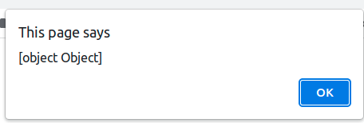
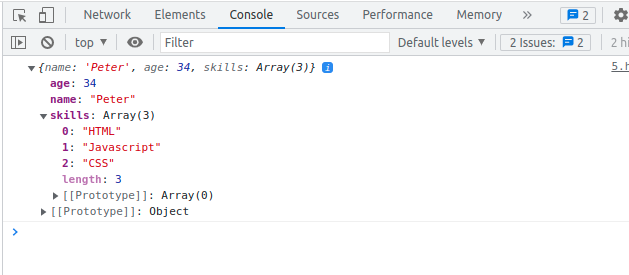

На первый взгляд, синтаксис JS прост и интуитивно понятен, что подкупает. Однако это не мешает тем, кто делает первые (или не первые) шаги в нём, допускать ошибки. Мы попытались осветить некоторые промахи начинающих разработчиков.
Язык JavaScript используется во фронтенд-разработке для браузерных приложений на стороне клиента. Для начала изучения достаточно простого редактора типа Notepad, браузера и какого-нибудь из многочисленных руководств для чайников. Но JavaScript проявляет себя не совсем так, как другие языки в разных ситуациях, и иногда это способствует возникновению ошибок. К примеру, нестрогая типизация языка и вольная трактовка данных может привести к тому, что данные будут интерпретироваться не так, как предполагает разработчик на этапе создания кода. Ошибки находятся в ходе работы этого кода.
Такое происходит сплошь и рядом — обращение к переменной, которая ранее не была объявлена либо недоступна в текущей области кода. Например, код:
<script>
let y = x + 1
</script>
Без предварительного определения переменной x породит ошибку.
Uncaught ReferenceError: x is not defined
Кроме того, переменная должна быть видна в текущем контексте. Сравните два примера.
Код 1.
<script>
function summa () {
let a = 2
let b = 3;
return a + b;
}
console.log(a); //Uncaught ReferenceError
</script>
Код 2.
<script>
let a = 2
let b = 3;
function summa () {
return a + b;
}
console.log(summa());
</script>
Код 1 на шестой строке выдаёт ошибку.
Uncaught ReferenceError: Cannot access 'a' before initialization
Дело в том, что переменная a определена внутри функции и недоступна за её пределами.
А код 2 без ошибок вернёт 5, потому что функция summa() имеет доступ ко всем переменным, определённым в глобальной области. Понимание области видимости важно в Javascript, области могут быть вложенными друг в друга, при этом дочерние области видимости будут иметь доступ к родительским, но не наоборот.
Чтобы записать условие сравнения переменной с каким-либо значением, используется оператор ==.
<script>
if(x == some_value) {}
</script>
Однако если ошибиться и использовать одинарный знак =, то вместо сравнения в круглых скобках окажется присваивание.
<script>
if (x = some_value) {}
</script>
В JavaScript эта операция будет истинной, в то время как иные языки программирования могут среагировать ошибкой.
Подвид предыдущей ошибки — когда переменная сравнивается не просто со значением, а с конкретным — единицей.
<script>
var x = some_value;
if (x = 1) { … }
</script>
Тут дьявол в деталях. По-булевски единица — это истина, а ноль — ложь. В результате выражение будет истинно.
Иной раз сравниваются переменные, которым были присвоены значения разных типов.
<script>
x = prompt('Введите число:', 0);
y = prompt('Введите другое число:', 0);
if (y < x){
console.log("Первое число " + x + " больше " + y);
}
else if (y > x){
console.log("Второе число " + y + " больше " + x);
}
else if (x == y){
console.log(x + " равно " + y);
};
</script>
Ввожу 5 и 125, а мне в итоге пишут, что 5 больше 125, почему?
Отвечаем: в этом примере переменные x и y сравниваются как строки, а не как числа, так как после получения значений они так и остались строками.
Ситуация изменится, если приведём значения переменной к числу.
…
x = parseInt(x)
y = parseInt(y)
…
К слову, в коде полезен === . Это оператор строгого равенства, который проверяет сравнимое с учётом типов.
if(x === y) { … }
</script>
В этом фрагменте кода сравнение сразу вернёт ложь, если переменные разных типов.
Следующий код нередко применяется в несложных сценариях, его любят начинающие разработчики.
<script>
for (let i = 0; i <= 100; i++) {
// некий код
}
console.log (i) //приведёт к выбросу исключения ReferenceError
</script>
Если попытаться использовать переменную i после выхода из цикла, то код в строке 4 приведёт к ошибке.
Переменная ликвидируется после окончания цикла, её значение будет не определено. В этом можно убедиться:
console.log(typeof i == typeof undefined) // выведет true
Попробуем при объявлении счётчика в цикле вместо let (это объявление переменной с блочной областью видимости) использовать директиву var.
<script>
for (var i = 0; i <= 100; i++) {
// некий код
}
console.log (i);
</script>
Тогда i после выхода из цикла продолжит жить своей жизнью.
Ошибка возникает, когда специальное ключевое слово this отсутствует в коде либо используется неправильно. Ключевое слово this ссылается на контекст выполняемой функции. Оно помогает работать с объектами. Но имеет значение контекст — какой именно объект в данный момент кода будет описан словом this.
<script>
function myFunction() {
var myObject = {
objProperty: "текстовое свойство",
objMethod: function() {
console.log(objProperty); //код, который приведёт к ошибке
}
};
myObject.objMethod();
}
myFunction();
</script>
В строке 5 переменная objProperty не определена, код вернёт ошибку.
Uncaught ReferenceError: objProperty is not defined
А всё потому, что пропущено ключевое слово this. Если внутри объекта myObject требуется обратиться к значению его свойства, то это делается следующим образом: this.objProperty.
Другой пример:
<script>
Form.prototype.submit = function () {
this.clearLocalStorage();
this.timer = setTimeout(function() {
this.clearView(); //код, который приведёт к ошибке
}, 100);
};
</script>
Ключевое слово this на строке 4 употребляется, однако код вернёт ошибку.
Uncaught TypeError: this.clearView is not a function
В этой строке контекст для this — уже область функции setTimeout (объект window).
Чтобы достичь нужного контекста, следует обратиться к нему, сделать это можно разными путями:
…
var self = this;
this.timer = setTimeout(function() {
self.clearView();
}, 100);
…
Form.prototype.submit = function () {
this.clearLocalStorage();
this.timer = setTimeout(this.countTime.bind(this), 100);
};
Form.prototype.countTime = function(){
this.clearView();
};
Это, скорее, не ошибка, а рекомендация более дружелюбного общения с посетителем. Чтобы мгновенно увидеть значение переменной value, можно просто взять и написать alert(value). Однако это не всегда поможет для решения сиюминутной проблемы. Например, если переменная value является объектом, то это мало что даст. Но существует набор решений для разных случаев.
Как правило, вывод данных нужен в ситуациях, когда хочется:
Это лучше alert. Во-первых, как следует из названия, служебные данные выводятся в консоли. Туда заходит немного рядовых посетителей, и если вы вдруг забыли убрать отладочный вывод, его увидят далеко не все. Во-вторых, с помощью отладки в консоли можно детально смотреть на объекты, о чём вскользь упоминалось выше.
Зададим объект и посмотрим на него разными способами.
<script>
var Person = {
name: 'Peter', age: 34, skills: ['HTML', 'Javascript', 'CSS']
}
alert(Person)
console.log(Person)
</script>
Результат кода alert(Person).

И результат вывода в консоль. Как видите, более информативно.

Такое происходит, когда библиотеку:
И вместо галереи или слайдера поджидает ошибка.
Uncaught TypeError: Cannot read properties of undefined
Смотрим код.
<link rel="stylesheet" href="https://cdnjs.cloudflare.com/ajax/libs/OwlCarousel2/2.3.4/assets/owl.carousel.min.css">
<link rel="stylesheet" href="https://cdnjs.cloudflare.com/ajax/libs/OwlCarousel2/2.3.4/assets/owl.theme.default.css">
<script src="https://cdnjs.cloudflare.com/ajax/libs/OwlCarousel2/2.3.4/owl.carousel.min.js"></script>
<script src="https://cdnjs.cloudflare.com/ajax/libs/jquery/3.6.0/jquery.min.js"></script>
<div class="owl-carousel">
<div class="item">
<h2>Item 1</h2>
</div>
<div class="item">
<h2>Item 2</h2>
</div>
<div class="item">
<h2>Item N</h2>
</div>
</div>
<script>
var owl = $('.owl-carousel');
owl.owlCarousel({...})
</script>
Библиотека Owl Carousel имеет в зависимостях Jquery, но подключается раньше.
В примере выше ошибку генерирует скрипт инициализации карусели.
Uncaught TypeError: owl.owlCarousel is not a function
У библиотеки не было шанса объявиться. Как правило, когда на странице используется ряд скриптов, ошибки плодятся как снежный ком.
Следует поменять местами подключения Jquery и Owl Carousel — строки 3 и 4.
Избежать распространённых ошибок помогут практика и понимание того, как работает язык. Отследить баги помогут такие инструменты, как JSHint, JSLint, ESLint.
Кроме того, в IDE обычно имеются плагины для дебаггинга. В начале статьи мы говорили о том, что начинать изучение JavaScript можно с помощью редакторов типа Notepad. Но в удобной настроенной среде это делать гораздо приятнее и эффективнее.
Как вы слышали не раз, не ошибается тот, кто ничего не делает. Красное оповещение об ошибке в консоли не должно пугать. Это подсказка, что пошло не так, инструкция к действию — погуглить фразу Javascript <текст ошибки>.
Из обсуждения:
давайте по пунктам
parseInt('3.5 фунта') // 3
Number('3.5 фунта') // NaN
Возможно, перед сравнением даже лучше предварительно проверить обе переменные через isNaN() для исключения таких случаев.
let i = 0;
for (i; i <= 10; i++) {
// некий код
}
console.log(i);
Если вы всё же хотите отобразить объект в алерте, то можно сделать это так:
const obj = {
a: 1,
b: 2,
c: 3,
};
alert(JSON.stringify(obj));
Можно даже навести красивость и сделать отступы так: alert(JSON.stringify(obj, null, 4));